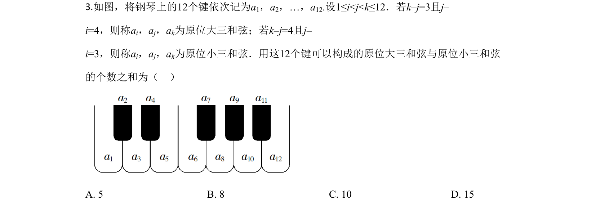
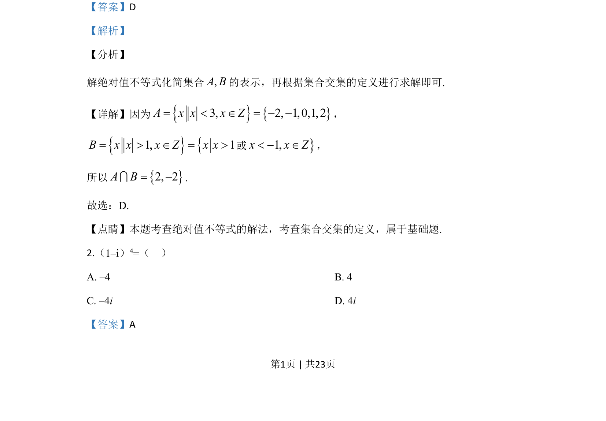
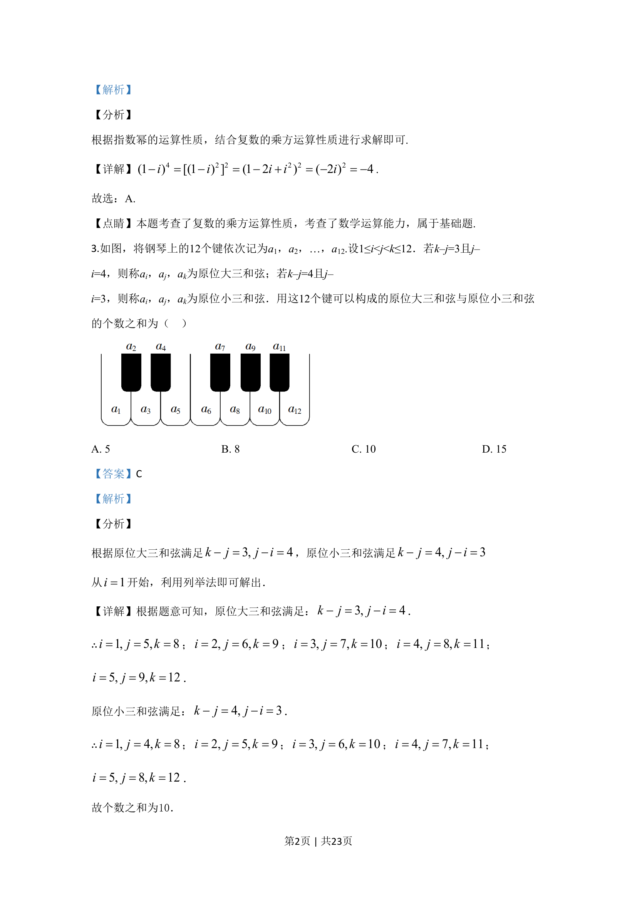

考点：计数原理 列举法 组合计数

钢琴12键按定义的原位大三和弦(k-j=3,j-i=4)与原位小三和弦(k-j=4,j-i=3)计数, 求两类和弦个数之和。


📄 原 PDF 第 2 页：
素材/真题/吉林/2008-2024·（吉林）数学高考真题/2020年高考数学试卷（文）（新课标Ⅱ）（解析卷）.pdf
3.如图，将钢琴上的12个键依次记为a1，a2，…，a12.设1≤i<j<k≤12．若k–j=3且j– i=4，则称ai，aj，ak为原位大三和弦；若k–j=4且j– i=3，则称ai，aj，ak为原位小三和弦．用这12个键可以构成的原位大三和弦与原位小三和弦 的个数之和为（ ） A. 5 B. 8 C. 10 D. 15
【答案】C 【解析】 【分析】 根据原位大三和弦满足3, 4k j j i- = - =，原位小三和弦满足4, 3k j j i- = - = 从1i=开始，利用列举法即可解出． 【详解】根据题意可知，原位大三和弦满足：3, 4k j j i- = - =． ∴1, 5, 8i j k= = =；2, 6, 9i j k= = =；3, 7, 10i j k= = =；4, 8, 11i j k= = =； 5, 9, 12i j k= = =． 原位小三和弦满足：4, 3k j j i- = - =． ∴1, 4, 8i j k= = =；2, 5, 9i j k= = =；3, 6, 10i j k= = =；4, 7, 11i j k= = =； 5, 8, 12i j k= = =． 故个数之和为10．